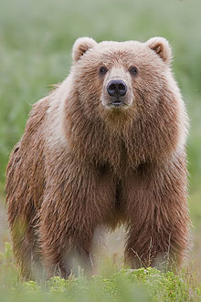

The Brown Bear
he brown bear (Ursus arctos) is a large bear species found across Eurasia and North America. It is one of the largest living terrestrial members of the order Carnivora, rivaled in size only by its closest relative, the polar bear, which is much less variable in size and slightly bigger on average. Adults of different subspecies range in weight from 80 to 600 kg (180 to 1,320 lb), with males being heavier than females. Despite its name, brown bears aren't entirely brown; the pelage can be reddish to yellowish-brown, and dark brown to cream in color. During winter, brown bears in some populations hibernate and emerge during spring to regain up to 180 kg (400 lb) of weight. They have well developed dentition and claws, ideal for their lifestyle.
Learn MoreHere are some more bear species:
